A Rainbow in Curved Air
Graduate Exhibition 2009, UCT Michaelis School of Fine Art, Cape Town, South Africa.
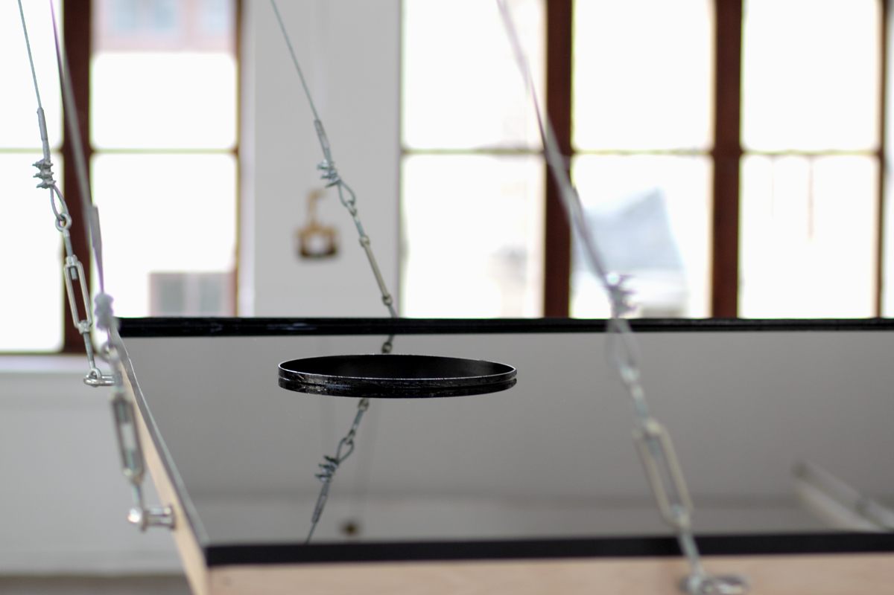
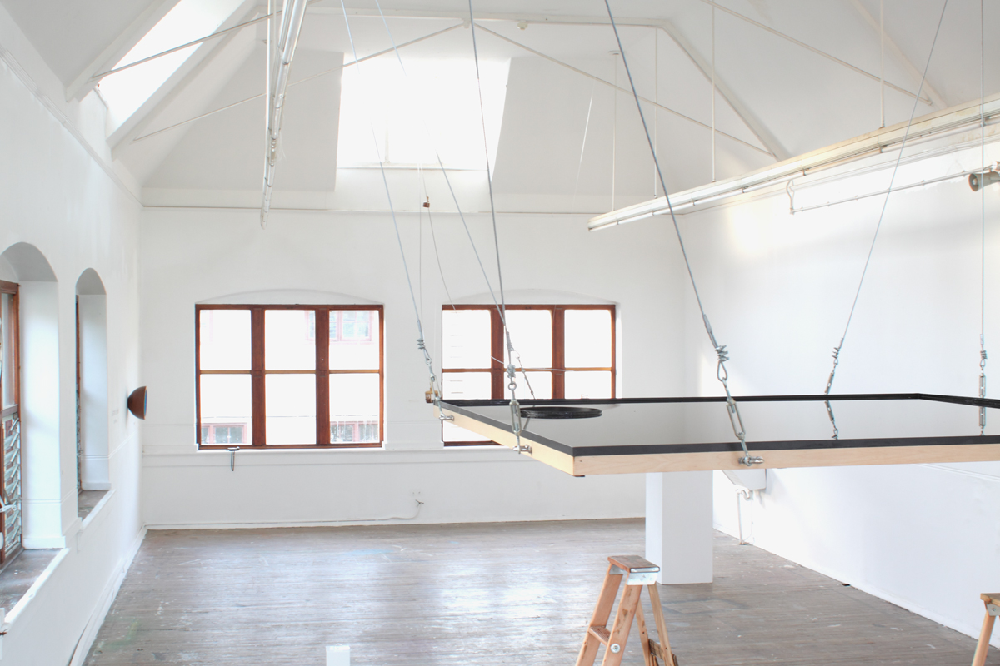
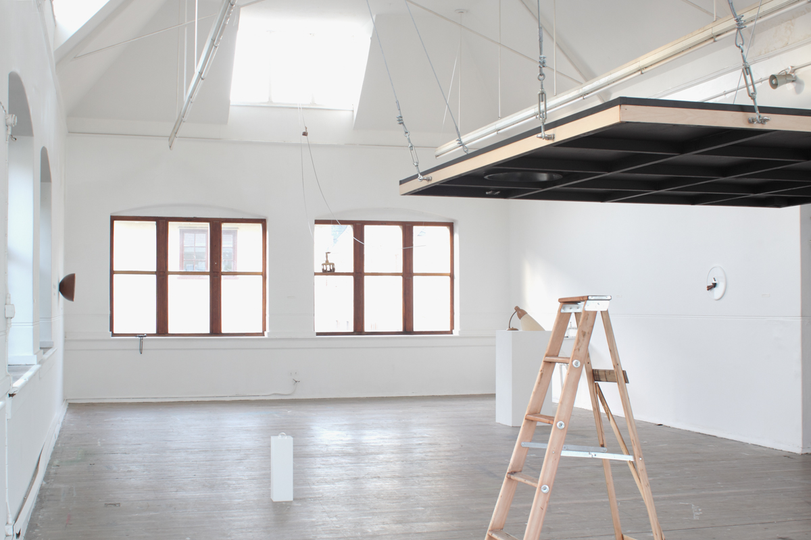
Your Sky
Used Engine Oil, Wood
244 x 244 x 25cm
2009
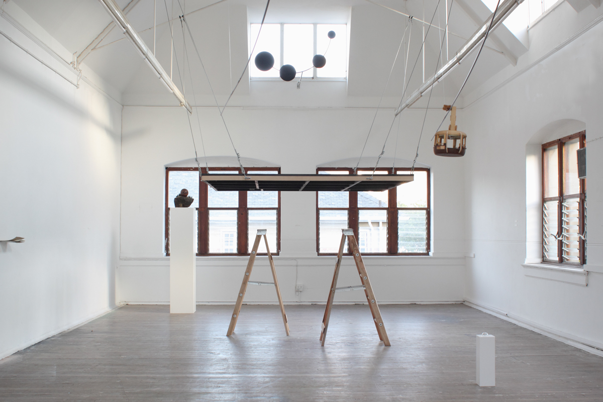
Installation View
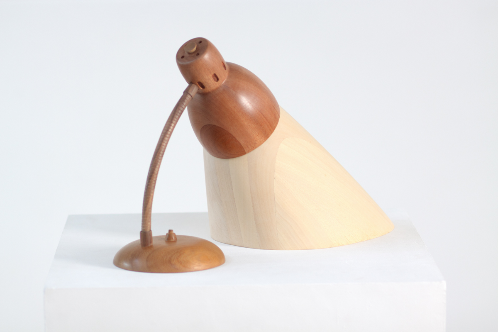
A Romance of Many Dimensions
Jelutong, Obechie, Walnut, Iroko
33 x 47 x 26cm
2009
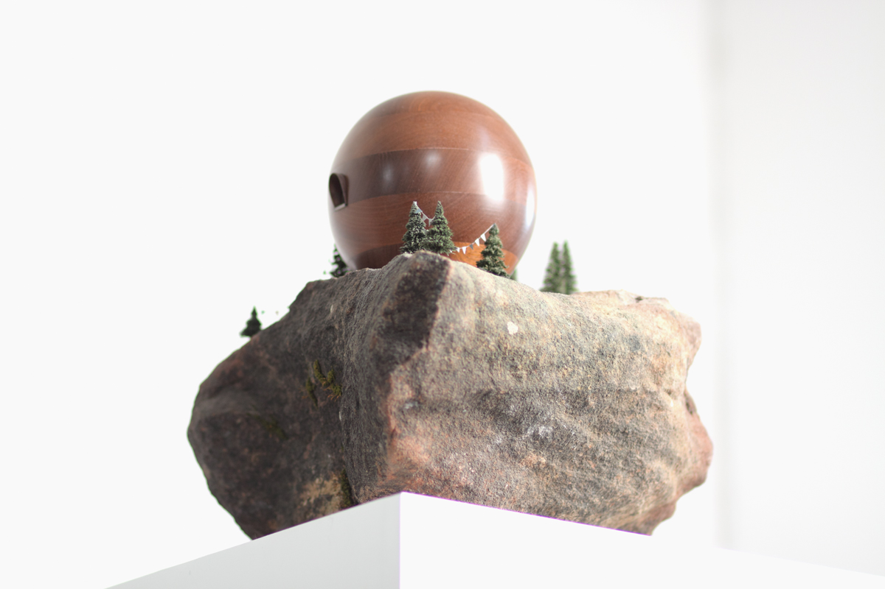
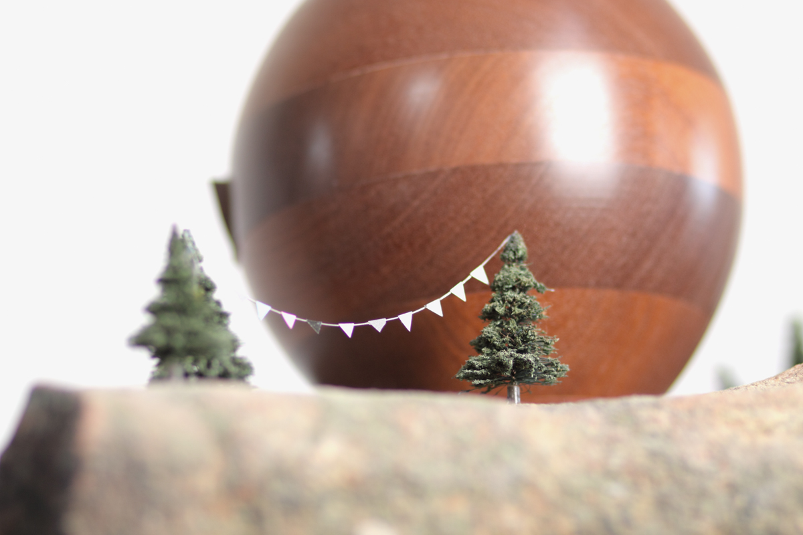
To Maclear's Beacon
Mahogany Sapele, Model Pine Trees, Found Rock
35 x 33 x 29cm
2009
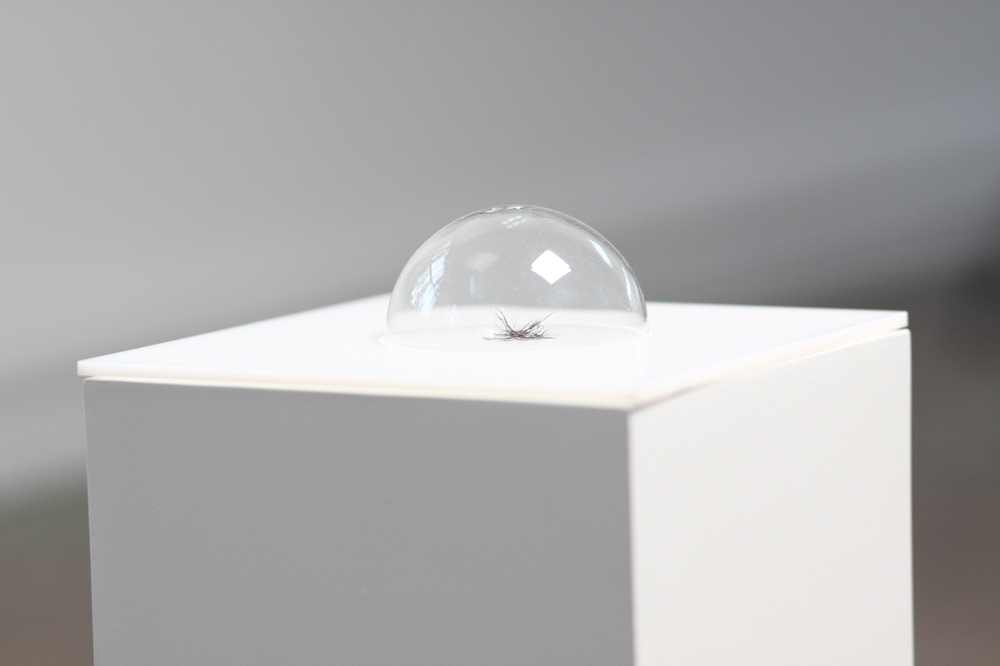
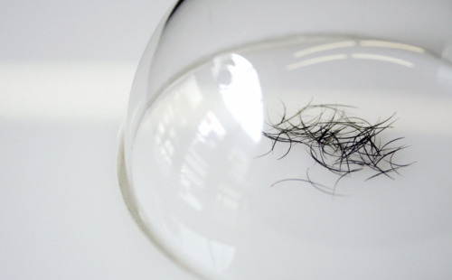
I Believe
62 Found Eyelashes
14 x 15 x 4cm
2009
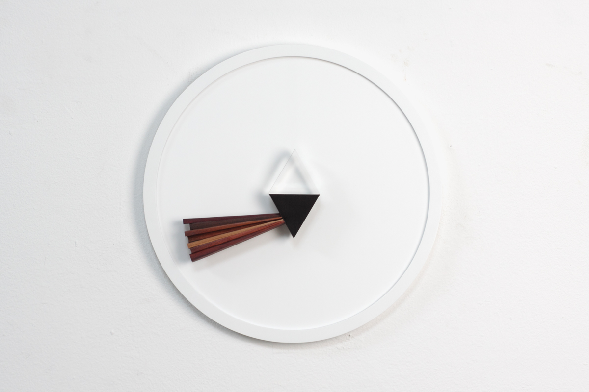
Untwisted All the Shiny Robe of Day
Prism, African Black Wood, Etimoe, African Rose Wood, Sycamore, Red Wood, Iroko, Tropical Olive, Purple Heart
Dimensions Variable
2009
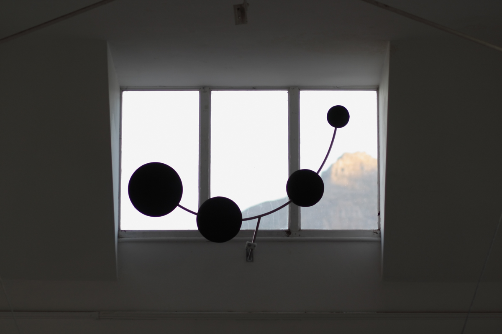
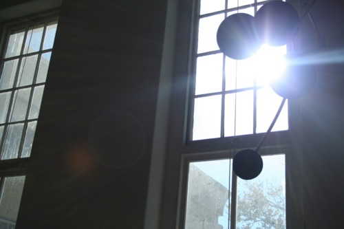
The Black Suns of Your 9 o'clock Eclipse
Coal, Stainless Steel
Dimensions Variable
2009
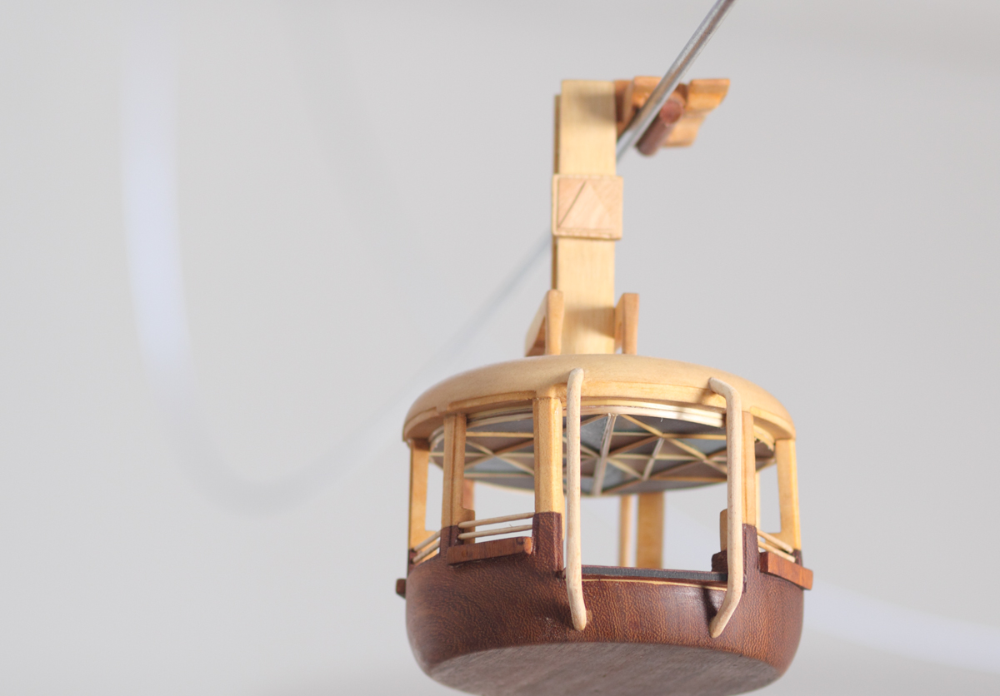
Following the Light of the Sun, We Left the Old World
Mixed Wood
Dimensions Variable
2009

If the Doors of Perception Were Cleansed
Mahogany Sapele, Perspex
36 x 36 x 17cm
2009
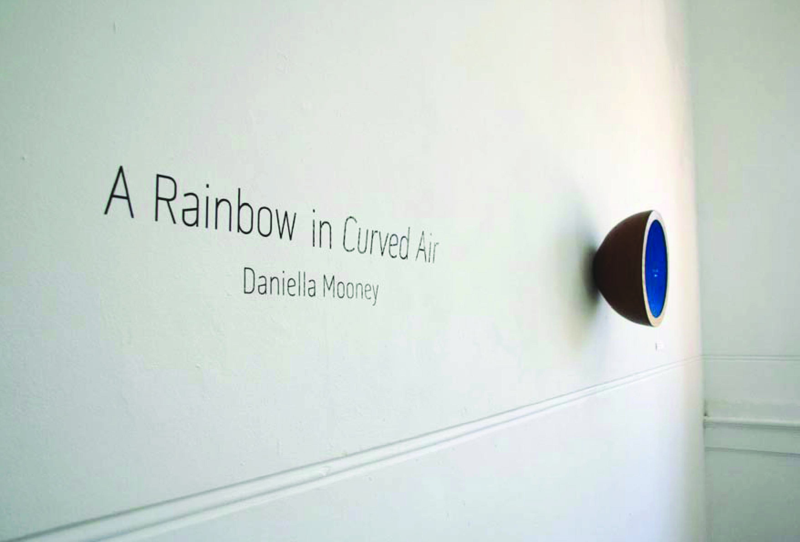